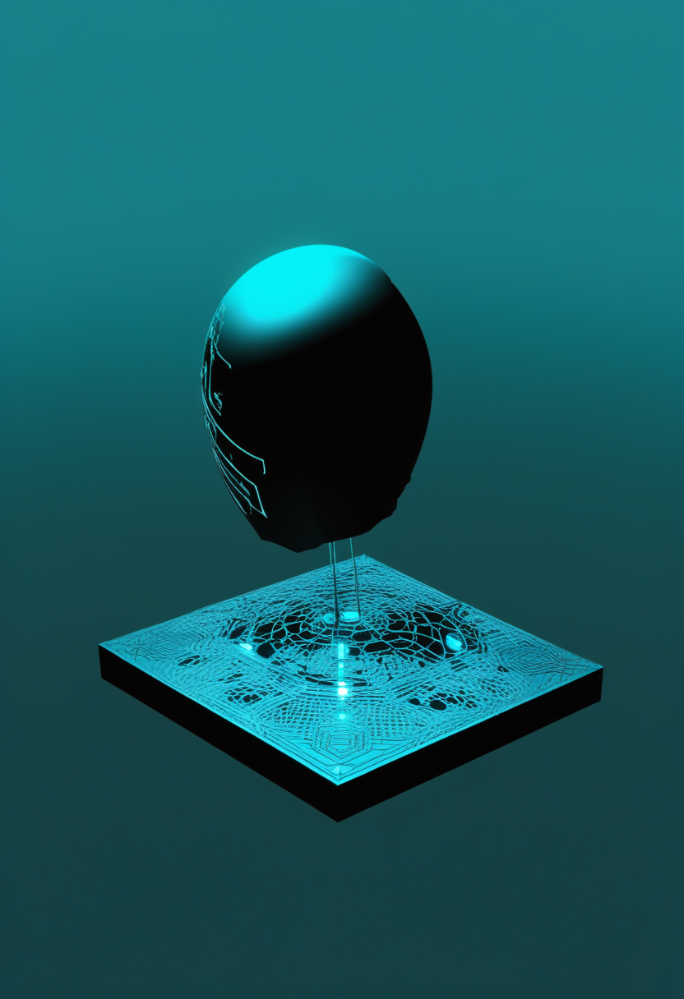
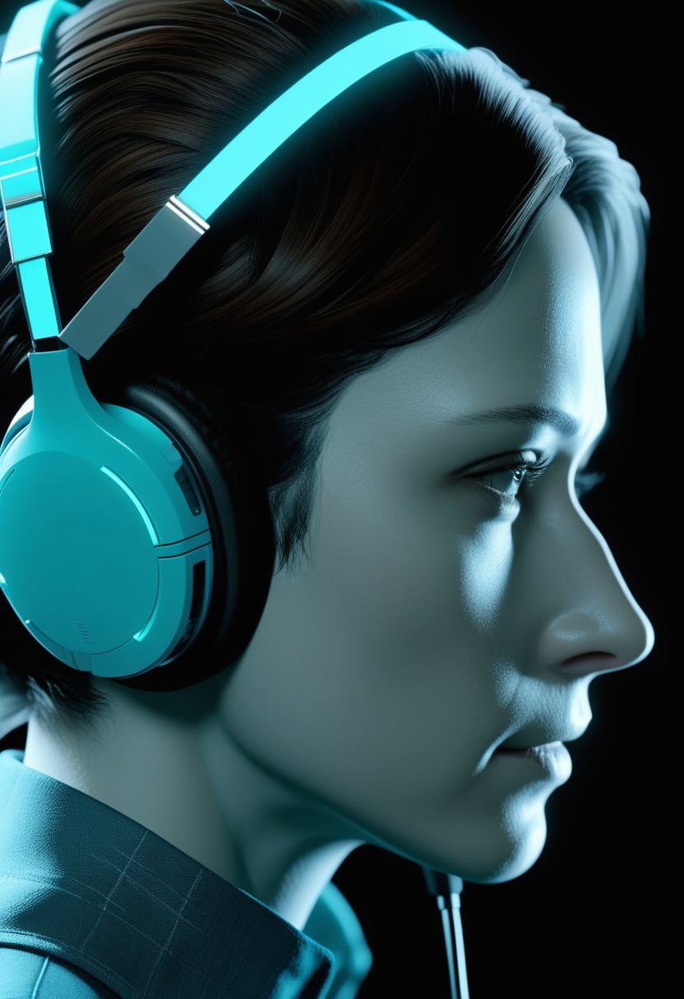
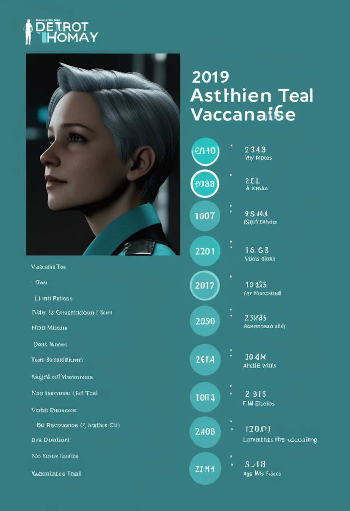
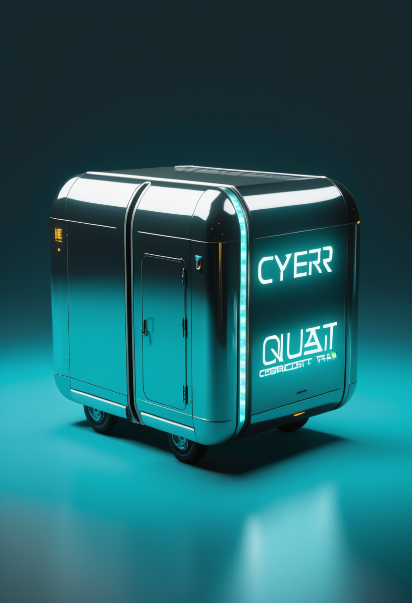
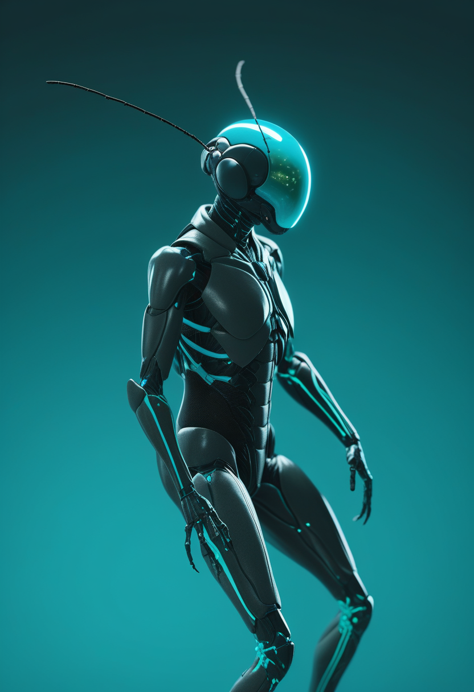

火曜日の便り。DRC(コンゴ民主共和国)のブンディブギョ型エボラは、WHO発表(DON614、7/30時点)によれば国内確定3,605例・死者1,587人、世界計3,626例・1,589人に達したまま、直近の完全報告週(疫学週30)には週間過去最多となる567例・死者296人が記録された ― これを受け保健パートナー各機関は今週、国内最大級となる新たな治療センターを立ち上げる。現場ではMSFも1,400人超のスタッフを投入し複数拠点で対応を続けている。命の章では、欧州・日本でSMA遺伝子治療の対象年齢が2歳以上へ拡大する承認が相次ぎ、既存薬も高用量化で対抗するなど治療選択肢が厚みを増した。自由の章では、非穿通型BCI「Layer 7」が思考だけによるカーソル操作を初めて実証し、SynchronはAppleとの統合を深めALS患者による米国初のVision Pro操作を実現した。基盤/公衆衛生では、米国の麻疹が7カ月で2025年の年間総数を上回り、未接種率9割超という内訳が明らかになった。畏敬の章では、シリコン量子チップの制御回路内蔵型(HRL)に続き再構成可能接続型(Undseth)の論文が同じNature誌に並び、8/12には欧州本土で27年ぶりの皆既日食が控える。そして美の章では、ショウジョウバエの全脳エミュレーションが91%の精度で行動再現に成功する一方、脳のデジタル化そのものは早くても50〜100年先という現実的な時間軸が改めて示された ― 理想と実装のあいだで、着実な一歩と慎重な見立てが同時に進む一日となった。
WHO疾病発生情報(DON614、7/30時点)によれば、DRCのブンディブギョ型エボラは国内確定3,605例・死者1,587人(致死率44%)、ウガンダ・フランスを含む世界計3,626例・1,589人に達し「DRC史上最大」の流行が続いている。直近の完全報告週(疫学週30)には週間過去最多となる567例・死者296人が記録された。これを受け保健パートナー各機関は今週、OCHAによればDRC国内最大級となるエボラ治療センターを新設し、既存の移送センターを補完すると発表した。現地ではMSFも1,400人超のスタッフを投入し複数の治療センターを運営しているが、人道対応資金の充足率は依然45%にとどまり、資金不足のまま「過去最速ペース」の拡大に対応する厳しい状況が続く。
欧州委員会は7/2、5q型SMAの2歳以上の小児・思春期・成人患者を対象とする遺伝子治療薬「Itvisma」(オナセムノゲン アベパルボベク)を承認した。未治療の小児・思春期患者を対象にシャム対照で実施された第3相STEER試験で、運動機能がシャム群に対し有意に改善したことが根拠となった。EUで広範な年齢層のSMA患者を対象に承認された遺伝子治療としては初めてで、乳児期を過ぎた患者にも1回投与の遺伝子治療という選択肢が開かれた。
ノバルティスは4/3、2歳以上のSMA患者を対象とする「ゾルゲンスマ髄注」の国内承認取得を発表した。2〜18歳未満を対象とした国内外の第3相試験結果に基づく承認で、従来の静注製剤(2歳未満が対象)を髄腔内投与という経路で高年齢層にも拡大した形となる。数カ月毎の反復投与が生涯必要なスピンラザ髄注とは異なり、1回投与で治療が完結する点を特徴とする。
FDAは3/30、Biogenのスピンラザ(ヌシネルセン)について、初回50mgを2週間隔で2回投与後、28mgを4カ月毎に維持投与する高用量レジメンを承認した。MDA 2026カンファレンスで示されたデータでは、標準用量を約4年間継続した集団の想定改善幅を上回る効果が報告されている。ロシュの経口薬エブリスディ(治療実績2.1万人超)が優勢とされる中、Biogenが市場シェア防衛に向けて投入した対抗策と位置づけられている。
SMA治療は欧州(Itvisma)・日本(ゾルゲンスマ髄注)ともに遺伝子治療の対象年齢を2歳以上へ拡大する承認が相次ぎ、既存薬(スピンラザ)も高用量化で対抗するなど、新生児期を過ぎた患者層への治療選択肢が急速に厚みを増している。

Precision Neuroscienceは7/21、手術で脳組織を貫通しない同社のBCI「Layer 7」を用い、健常な被験者がカーソル操作・ゲーム操作・スマートフォン操作を思考のみで行えたと発表した。同社は非穿通型BCIとしてはこれが初の思考制御実証だとしている。脳表面に留まる低侵襲設計のまま、実用的な操作精度に到達したことを示す成果となった。

Synchronは血管内埋め込み型BCI「Stentrode」とAppleの「BCI-HID」(Bluetoothベースの標準規格)を統合し、iPhone・iPad・Vision ProをSwitch Control経由で操作可能にした。すでに米国のALS患者がStentrode経由でApple Vision Proを操作する初の事例が実現しており、2025年11月に確保した2億ドルのシリーズD資金を背景に商用展開に向けた準備が進む。
BCIは運動機能の代替として、非穿通型(Precision)が思考だけの操作を初めて実証する一方、血管内型(Synchron)は民生デバイスとの統合による実生活実装を加速させている ― 侵襲度の異なる2つの経路が同時に実用段階へ近づいた。
WHO疾病発生情報(DON614、7/30時点)によれば、DRC国内確定3,605例・死者1,587人(致死率44%)にウガンダ20例・フランス1例を加えた世界計は3,626例・1,589人に達している。直近の完全報告週(疫学週30)には週間過去最多となる567例・死者296人が記録され、震源地イトゥリ州から北キブ・南キブ・オートウェレ・チョポの5州49保健地区への拡大が続く。これを受け保健パートナー各機関は今週、OCHAによればDRC国内最大級となるエボラ治療センターを新設し、既存の移送センターを補完すると発表した(具体的な開設地は本号執筆時点で確認できず、続報が入り次第訂正する)。
国境なき医師団(MSF)は、ブンディブギョ型エボラの対応にDRC国内で1,400人超のスタッフを投入していると公表した。北キブ州ブテンボに新たな治療センターを設置しているほか、イトゥリ州ブニアのエリキヤ治療センターや同市サラマ・クリニックでも感染制御・隔離体制の強化や医療従事者への防護具訓練を実施している。人道対応資金の充足率は依然45%にとどまるが、現場の医療体制は着実に積み増されている。

CDCデータに基づくCIDRAPの報道(7/30時点)によれば、米国の2026年の確定麻疹症例は2,371例に達し、2025年の年間総数をわずか7カ月で上回った。新規アウトブレイクは年間37件、症例の94%がアウトブレイク関連。患者の93%がワクチン未接種または接種歴不明で、20%が5歳以下、69%が19歳以下の子ども・若年層が占める。ユタ・バージニア・テキサス・ペンシルベニアの各州で活動的な流行が続いている。
DRCエボラは人道資金不足(充足率45%)を抱えたまま「過去最速」の拡大が続く一方、MSFの1,400人超のスタッフ投入と国内最大級の新センター始動という対応強化が同時進行している。米国の麻疹はすでに2025年の年間実績を超え、未接種率9割超という共通の脆弱性が改めて浮き彫りになった。

前号で報じた米HRL研究所の自律制御型シリコン量子プロセッサ論文と同じNature誌7/30号に、Undsethらによる第2の独立研究が掲載された。同チームは1個の「移動量子ビット」を4個の固定量子ビットの間でシャトル移動させ、量子誤り訂正の核となるパリティ検査測定を実証した。HRL論文が極低温制御回路の内蔵化を特徴とするのに対し、こちらは再構成可能な長距離接続性を特徴とし、シリコン量子計算の大規模化に向け異なるアプローチが並行して進展していることを示した。
8月12日、グリーンランド・アイスランド・スペイン北部およびポルトガル北西端の一部を横断する皆既日食が発生する。皆既帯外のフランス・ベルギー・スイスなど欧州広域でも88〜96%の部分日食が観測可能。欧州本土での皆既日食としては1999年以来27年ぶりとなり、月が8/10の近地点通過から間もないため見かけの月直径が大きく、最大食のときの皆既継続時間は最長2分18秒に達する見込みとなっている。
中国科学院(CAS)は7/8、北京で開催された国家科学技術奨励大会において、同院国家天文台が主導した「500メートル球面電波望遠鏡(FAST)」プロジェクトが国家科学技術進歩賞一等賞を受賞したと発表した。同日、CAS大連化学物理研究所の「単一原子触媒」研究が国家自然科学賞一等賞を受賞するなど、CASは2025年度の国家科学技術賞で計48件の受賞(うち27件で主導機関)を果たしている。
シリコン量子計算は制御回路内蔵型(HRL)と再構成可能接続型(Undseth)という異なる2方式が同時にNatureに掲載され、実用化への道筋が複線化している。天文分野では欧州の皆既日食という一過性の観測機会と、中国のFAST望遠鏡という継続運用インフラの受賞の両方が話題となった。

Eon Systemsは3月、ショウジョウバエの全脳コネクトーム(FlyWireプロジェクトのデータ、約12.5万ニューロン・5,000万シナプス結合)に単純な神経モデルを適用し、物理シミュレーション上の仮想身体を制御させることに成功したと発表した。前脚をこすり合わせる、口吻で給餌するなど複数の行動を91%の精度で再現したという。同社は「複数行動を生む全脳エミュレーションの世界初の身体実装」と位置づけるが、これは人間の意識転送(マインドアップロード)とは異なる技術的示唆にとどまるとの指摘も出ている。
6月に公開されたarXiv論文「Cognitive Digital Twins: Ethical Risks and Governance for AI Systems That Model the Mind」は、行動・状況・生理データから個人の認知を模倣・予測・代理判断するAIシステムを「認知デジタルツイン」と定義し、権限(Authority)・自律性(Autonomy)・アクセスと管理(Access and Control)・説明責任(Accountability)・可用性(Availability)から成る「5A」統治枠組みを提案した。
Forbes特集(7/31)は、人間の脳の完全なデジタル化(マインドアップロード)について複数の神経科学者の見解を紹介し、実現には早くても数十年〜100年規模の時間が必要との見方を改めて示した。2月にウィーン医科大学で開かれた「Hybrid Minds」シンポジウムでも、10年以内のデジタル不死を謳う主張は科学的根拠を欠くとの指摘が相次いでいたという。
「個人まるごとのデジタル化」は依然として数十年単位で遠い一方、昆虫規模の全脳エミュレーションは身体実装の段階に入り、認知デジタルツインのような限定的な人間モデリングには早くも統治枠組みの議論が先行している。理想と実装、規制の間の距離を測る作業が着実に進んでいる。
2026年8月4日、DRCのエボラは直近の完全報告週(疫学週30)に週間過去最多となる567例・死者296人を記録し、これを受け保健パートナー各機関はDRC国内最大級となる新たな治療センターを今週立ち上げる。現地ではMSFも1,400人超のスタッフを投入し複数拠点で対応を続けているが、人道対応資金の充足率は依然45%にとどまっている。命の現場では、欧州がItvisma、日本がゾルゲンスマ髄注と、ともにSMA遺伝子治療の対象年齢を2歳以上へ拡大する承認に踏み出し、既存薬スピンラザも高用量化で対抗した。自由の分野では、非穿通型BCI「Layer 7」が思考だけによるカーソル操作を世界で初めて実証し、SynchronはAppleとの統合を深めてALS患者による米国初のVision Pro操作を実現した。基盤/公衆衛生では、米国の麻疹がわずか7カ月で2025年の年間総数を上回り、患者の93%が未接種または接種歴不明という内訳が明らかになった。畏敬の章では、シリコン量子チップの2つの異なる方式が同じNature誌に並んで掲載され、8/12には欧州本土で27年ぶりとなる皆既日食が控える。そして美の章では、ショウジョウバエの全脳エミュレーションが91%の精度で行動を再現する一方、人間の脳のデジタル化には早くても50〜100年を要するとの見立てが改めて示され、理想と実装のあいだの距離を測る作業が続いていた。
では、また明日の朝に。 — JaH